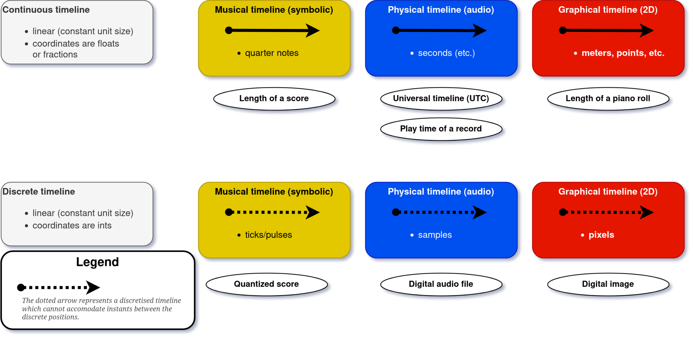
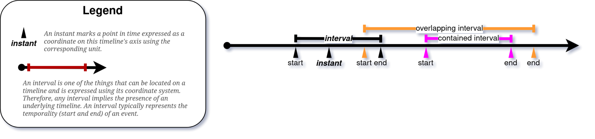
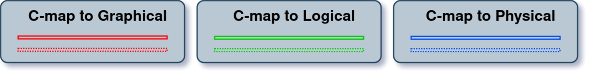
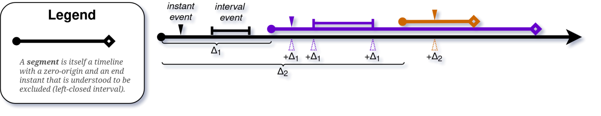
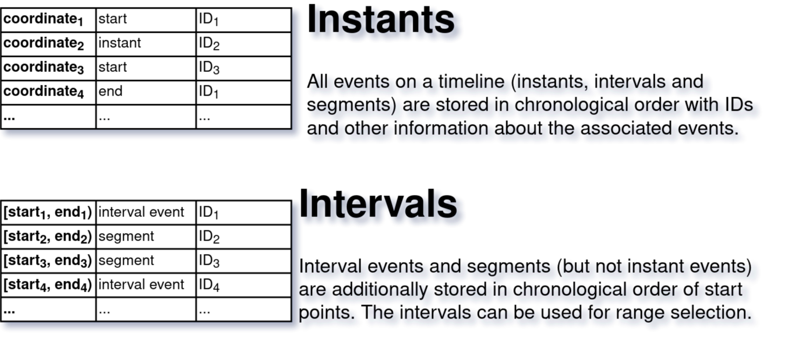

Conceptual Model
The full specification of the TimeToAlign! cross-domain timeline model
This page presents the complete conceptual model underlying TimeToAlign!. The accompanying TISMIR manuscript introduces these concepts through five worked examples; this page serves as the authoritative reference for formal definitions and visual conventions.
The model is organised in six layers, each building on the previous:
- Foundations: Domains, timelines, coordinates, instants, events
- Flow control: Contiguity, breaks, jumps
- Conversion maps: Coordinate transformations
- Nested timelines: Children, segments, timestamps
- Regions and derivative timelines: Named parts, traversals, warps
- Alignment: MatchClaims, AlignmentAnchors, MatchGraph, MatchLine, WarpMap, AlignmentBundle
Foundations
The timeline
A is a positive coordinate axis minimally defined by two properties:
- an origin (the zero coordinate), and
- a measuring unit that determines the type of timeline.
The measuring unit places each timeline in one of three temporal domains (physical, logical, or graphical), each of which admits both continuous and discrete representations. This yields six fundamental timeline types:

| Domain | Modality | Continuous | Discrete |
|---|---|---|---|
| Physical | Hearing | seconds, milliseconds, minutes | samples |
| Logical | Conceptualising | quarter notes, beats | ticks, divisions |
| Graphical | Seeing | metres, centimetres, points | pixels |
The physical domain captures acoustic time as experienced through hearing. The logical domain captures symbolic musical time—the temporal structure encoded in a score, independent of any particular performance or visual rendering. The graphical domain captures spatial representations of time: images, pages, and pixel coordinates.
A key observation: notation is both graphical and logical. A printed score is, in effect, an alignment between a graphical timeline (pixel coordinates on the page) and a logical timeline (quarter notes, beats, measures). This duality is central to the model.
Images are not themselves temporal objects. The graphical domain is called “temporal” because graphical artefacts encode time spatially—a spectromorphological analysis maps seconds to pixels, a score maps beats to horizontal position. The timeline models this spatial encoding of time, not a time dimension intrinsic to the image.
Video and animated scores straddle the physical and graphical domains: they are physical renderings (at a frame rate, in seconds) of graphical content.
Coordinates and instants
Definition: Coordinate
A coordinate represents a time-point in terms of its distance from the timeline’s origin as a positive real number associated with the timeline’s measuring unit.
A coordinate is the model’s most basic quantity: a scalar value paired with a unit (e.g., 3.5 seconds, 480 ticks, 127 pixels). In the implementation, coordinates additionally carry a number type (integer, float, or fraction) to prevent silent rounding errors.
Definition: Instant
An instant associates a coordinate (a “time-point”) with a signification such as “start of event e.”
Everything a timeline accommodates is associated with a coordinate through an Instant. Two Instants sharing an identical coordinate are synchronous but not identical—the instant at which a note ends is ontologically separate from the instant at which the next note begins, even when both share the same coordinate.
Visualisation: Instant
An Instant is represented as a wedge pointing at the timeline, labelled with a coordinate value.
Two principal sub-types are distinguished:
- StartInstant: marks the beginning of a .
- EndInstant: marks the end of a TimeInterval.
Together, a StartInstant and an EndInstant define a TimeInterval: a half-open interval [s, e) that is left-inclusive and right-exclusive. This convention ensures that consecutive intervals (e.g., successive quarter notes) tile the timeline without gaps or overlaps: the first quarter note occupies [0, 1), the second [1, 2), and so on.
Constraint: The EndInstant’s coordinate must be greater than or equal to the corresponding StartInstant’s coordinate.
Events
Definition: Event
We call anything associated with a timeline via an Instant or a TimeInterval an event.
This is a deliberately broad category. The model is agnostic to what events represent—they may be notes, rests, annotations, audio segments, bounding boxes, or any other entity that possesses a temporal location. Two principal sub-types:
- InstantEvent: defined by a single Instant (zero duration).
- TimeIntervalEvent: defined by a StartInstant and an EndInstant (non-zero duration).
Events may carry arbitrary properties (pitch, dynamics, text labels, file paths) that are relevant for querying and matching but are not part of the temporal model itself.

Basic operations
A timeline supports four basic operations:
- Addition: inserting an Instant (and thereby its associated event).
- Removal: deleting an Instant.
- Lookup: retrieving all Instants at a given coordinate.
- Query: retrieving all TimeIntervals spanning a given coordinate.
The length of a timeline is the distance between its origin and its last coordinate with at least one Instant. A timeline may be locked, preventing the addition of Instants beyond the last existing time-point.
Synchrony
The model distinguishes two forms of synchrony:
- Strict synchrony: Instants sharing identical coordinates on the same timeline.
- Pragmatic synchrony: Instants binned together on the basis of a threshold (quantisation). Pragmatic synchrony is not yet implemented in the library but is planned as a configurable parameter.
Five default propositions govern Instants on a timeline:
- Instants sharing the same coordinate are synchronous.
- Temporally overlapping parts of TimeIntervals are strictly synchronous.
- A later coordinate implies later occurrence in that domain (no cross-domain implication is entailed).
- Every StartInstant necessitates a corresponding EndInstant, and vice versa.
- An EndInstant’s coordinate cannot be smaller than the corresponding StartInstant’s.
Flow Control
Contiguity
Definition: Contiguous TimeInterval
A TimeInterval [s, e) is contiguous in the sense that it spans all coordinates between its Start- and EndInstant monotonically. A TimeInterval is said to span a coordinate c if s < c < e.
Definition: Contiguous with
We call contiguous with TimeInterval [s, e) all Instants synchronous with e. By extension, any event located or starting at the end of a TimeIntervalEvent is called contiguous with it.
Contiguity is the default: a section of music flows into the next. Two phenomena override this default.
Breaks
Definition: Break
A break is a control event that voids the contiguity at the Instant where it is located.
Events that would normally be contiguous at a break’s coordinate become discontiguous. Two constraints follow:
- A TimeInterval cannot be added if it would span a break’s coordinate.
- A break cannot be placed at a coordinate already spanned by a TimeInterval.
Breaks encode phenomena such as the boundary between a prima volta and a seconda volta ending, or the boundary at a coda sign where the default sequential flow is interrupted.
Visualisation: Break
Breaks are represented as red lines orthogonal to the timeline axis.
Jumps
Definition: Jump
A jump is a control event defined by two Instants: a JumpFrom and a JumpTo Instant. When active, it makes any event located or starting at JumpTo contiguous with any event ending at JumpFrom.
Jumps encode repeat signs, dal segno al coda, da capo al fine, and analogous structures. Additional event properties define conditions under which a control event is active (e.g., a fine is effective only after a da capo al fine; prima and seconda volta brackets are conditionally active depending on the traversal count).
Visualisation: Jump
Jumps are represented as dotted arrows from the JumpFrom Instant to the JumpTo Instant. The curvature of the arrow reflects the distance between the two coordinates.
Together, breaks and jumps form the flow-control apparatus of the model. They determine how a timeline is traversed—which sections are played in what order—without altering the underlying coordinate system. The traversal itself is captured by a (see Derivative timelines).
Conversion Maps
Definition: ConversionMap (C-map)
A ConversionMap is a function that maps any coordinate to at most one value. If the function is bijective, we can derive an InverseMap.
Conversion maps are at the heart of the model. They connect coordinate systems, convert between units, and enable the transfer of information across timelines.
Visualisation: ConversionMap
Conversion maps are visualised as double lines adopting colour and pattern from the type of timeline associated with the measuring unit that they output (see Figure 3). Maps outputting values other than coordinates (e.g., string labels) use distinctly different colours or patterns.

Output types
The output of a C-map can be:
- A coordinate in the same or a different unit (e.g., pixels to seconds, ticks to quarter notes). This is the most common case.
- A specifier such as a measure number, a filename, or a label.
- An auxiliary constant (e.g., a fixed y-coordinate for generating a horizontal line in an image).
When the output is a coordinate, the C-map implicitly defines a derived timeline with variant coordinates. This is how a single DiscreteGraphicalTimeline (pixels) can simultaneously express seconds, quarter notes, and (x, y) pairs.
Bounded and unbounded maps
A C-map can be:
- Unbounded: applies globally across the entire timeline.
- Bounded: defines one or several regions of vigour (s) within which it is valid. Outside these regions, the map returns no result.
Map families
The implementation organises C-maps into families:
timetoalign library.
| Family | Description | Example |
|---|---|---|
| Affine (ScalarMultiplicationMap) | y = ax + b | pixels to seconds |
| Lookup (TableMap) | Explicit key-value mapping | tick to tempo |
| Interpolation | Linear interpolation between anchor points | warp path |
| Constant | Returns the same value for any input | y-coordinate of a staff line |
| Straight line | Generates (x, y) pairs for a line | horizontal system in an image |
| Discretisation | Rounds continuous to discrete | seconds to samples |
| Periodic (RotationMap) | Wraps coordinates cyclically | repeating ostinato |
| Metric-aware (FloorMap, MetricMap) | Beat and measure structure | BeatGrid |
MultiMaps: composing conversion maps
Three composition strategies produce MultiMaps:
- CombinationMap
- Yields outputs from multiple C-maps simultaneously. For instance, combining an x-map and a y-map produces (x, y) coordinate pairs.
- ChainMap
- Applies C-maps in sequence: the output of one becomes the input of the next (e.g., ticks -> beats -> seconds). A ChainMap defines a conversion path and is a key building block for coordinate transfer.
- ConcatenationMap
- Combines bounded C-maps so that each coordinate region maps to one of them. For instance, a score with five systems has a ConcatenationMap of five StraightLineMaps, each valid within its system’s pixel range.
Nested Timelines
A timeline can accommodate not only events but also other timelines.
Children
Definition: Child
A timeline is called a Child when it is recursively nested in a parent timeline.
A timeline can accommodate other timelines (Children) provided they use the same measuring unit. Constraints mirror those for TimeIntervalEvents:
- A Child cannot span an existing in the parent (unless explicitly adopted).
- A Child may only extend the parent’s length when the parent is not locked.
- Once added, a Child’s length is locked to prevent side effects.
- Only the top-level (“root”) timeline can be extended.
Children introduce relative coordinate systems within a parent. A Child’s local origin is mapped to a specific coordinate of the parent; its local coordinates are offsets from that origin. This is essential for modelling multi-system score pages, where each system has its own pixel range but is part of a single graphical timeline.
Visualisation: Child
A Child is visualised as a timeline whose EndInstant is marked by a hollow diamond (in contrast to the filled arrowhead of a root timeline).
Children can overlap, leave gaps between them, carry their own C-maps, and nest recursively to arbitrary depth.

Segments and SegmentLines
Definition: Segment and SegmentLine
When all Children of the same parent timeline (“siblings”) are contiguous with each other, we call them Segments and the parent a SegmentLine.
The key advantage of a SegmentLine is that contiguous siblings allow cumulative summing of segment lengths and their C-maps (provided they convert to the same unit relative to the segment’s origin). This enables efficient coordinate conversion across the entire structure.
Four operations are associated with Children:
- Addition: adding a timeline as a Child, including all its events and C-maps.
- Partitioning: creating a new Child from a parent timeline and a TimeInterval.
- Segmentation (special case of partitioning): creating k Segments from k+1 split coordinates, turning the parent into a SegmentLine.
- Concatenation: adding a Child at the parent’s EndInstant (extending the parent).
| Property | Region | Child | Segment |
|---|---|---|---|
| Is a timeline (holds events) | No | Yes | Yes |
| Siblings must be contiguous | No | No | Yes |
| Can span breaks | Yes | No | No |
TimeStamps
Definition: TimeStamp
A TimeStamp is a set of values reflecting the coordinate of a root timeline, the synchronous coordinates of all Children, and the conversion results of all ConversionMaps associated respectively.
A TimeStamp is a cross-section through a timeline hierarchy at a given coordinate. It answers the question: “At coordinate c of the root timeline, what are the local coordinates in each Child, and what do all C-maps produce?”
By analogy, a TimeIntervalStamp combines a start TimeStamp and an end TimeStamp, representing the cross-section of an interval through the hierarchy.
Visualisation: TimeStamp
TimeStamps are visualised as a vertical cross-section through a timeline that intersects all Children and ConversionMaps at their synchronous points.

Regions and Derivative Timelines
Regions
A Region is a named part of a timeline defined by a . Regions are useful for referring to parts of a timeline by name (e.g., “Chorus”, “Verse”, “Development”) or by generic labels (e.g., alphabetical letters for representing traversal paths).
Regions are not timelines: they do not accommodate events or C-maps. They can, however, be used as the basis for partitioning a timeline into Children—creating a Child whose boundaries correspond to the Region’s TimeInterval.
Derivative Timelines
Three kinds of derived timelines play a central role in alignment:
- TraversalMap (T-map)
-
A sequence of s (often corresponding to previously defined s) reflecting a specific traversal path through the timeline. A TraversalMap is computed from flow-control events (s and s) or assembled manually. The T-map’s intervals can be partitioned and concatenated, yielding a new reflecting the traversal.
For example, a score with a repeat and a dal segno al coda has a T-map like [A, B, A, B, C, D] where some regions appear more than once. The resulting SegmentLine is a new timeline in “performance order.”
- Converted timeline
- A timeline whose coordinates have been transformed to another unit via a or , potentially after applying a T-map.
- WarpMap
- A derived timeline where coordinates have been re-adjusted to align with those of another timeline on the basis of s. See Alignment for the full definition of WarpMap and the pipeline that produces it.
Alignment
The alignment layer is where the model’s cross-domain capability comes together.
The Match
Definition: Match
A Match represents the claim—issued by a human or algorithmic agent—that a given set of events from disparate timelines are synchronous or equivalent in some other way. The set may include special sentinel values (NOMATCH) allowing one to encode a reason for which a given timeline is asserted not to include any synchronous event corresponding to the matched events from the remaining timelines.
A Match takes the form of named references (IDs) of claimed-equivalent events, combined with metadata on genesis:
- Agent: who or what produced the match (human annotator, DTW algorithm, neural model, …).
- Decision criteria: what evidence was used (temporal similarity, harmonic content, expert judgement, …).
- Certainty level: how confident the agent is in the claim.
Matches grow incrementally: an initial match between events A and B can be extended by adding B-C, creating a match path A -> B -> C that connects three timelines. The model explicitly matches events (not coordinates) to allow richer metadata about the alignment procedure.
Two levels of matching are distinguished:
- Temporal matching: the matched events occupy corresponding temporal positions (e.g., “this beat in the score corresponds to this moment in the recording”).
- Conceptual matching: the matched events are semantically equivalent but may not share a temporal correspondence (e.g., “both versions have a Bridge section, but they differ in length and internal structure”).
AlignmentAnchors
Definition: AlignmentAnchor
An AlignmentAnchor is a pure coordinate pair associating one coordinate on timeline A with one coordinate on timeline B. It is a neutral record with no claim semantics—provenance and interpretation are carried by the enclosing . Only synchronous MatchClaims produce AlignmentAnchors.
From a that associates s, two anchors are derived: a StartAnchor and an EndAnchor. Based on the units present in the aligned timelines, s can be constructed.
Visualisation: AlignmentAnchor
AlignmentAnchors are visualised as connecting lines between TimeStamps, using the same or a similar visual style as the Matches they derive from.
MatchClaim
A MatchClaim always knows which pair of timelines it connects (timeline_a_id and timeline_b_id are top-level fields). It contains 0–2 AlignmentAnchors (only if synchronous), synchrony and explicitness flags, and optional metadata (agent, decision criteria, certainty). Four cases are distinguished:
- Event-to-event (case a): two timed things on different timelines correspond—the core alignment operation.
- Projection (case b): an event is projected onto a timeline with no matching event—useful for transferring annotations.
- NOMATCH (case c): an event has no equivalent on the other timeline—a positive assertion of absence.
- Implicit (case d): generated automatically by group extension—e.g., when a match between two timelines implies coordinates on sibling timelines within the same .
MatchGraph and MatchStamp
A MatchGraph is an on-demand analytical structure built from MatchClaims. Nodes are (timeline_id, coordinate) tuples; edges derive from the s of synchronous claims. Each connected component yields a MatchStamp—a synchronised instant across multiple timelines. A MatchGraph can be extended with implicit claims based on membership. In the Hendrix example, each Match box M1–M15 is a MatchGraph, not a single MatchClaim.
Definition: MatchStamp
A MatchStamp is the union of the s from each participating . It contains one coordinate per participating timeline and, with conversion_maps=True (the default), the results of all s associated with those timelines.
A MatchStamp from a single contains the two GroupTimestamps for the claim’s . A MatchStamp from a MatchGraph contains all GroupTimestamps that the graph connects through its connected components. Like a , it can be expanded with within-group coordinates (delegating to ) and C-map conversions.
The MatchLine
The MatchLine is an ordered sequence of s for a given source timeline, sorted by coordinate on that source timeline. Created by selecting and resolving MatchClaims (all or a filtered subset), it serves as input for generation. In the Hendrix example, the inferred chord-event alignment is based on a MatchLine selecting MatchGraphs M6–M9.
WarpMap
Definition: WarpMap
A WarpMap is a standalone object that produces a materialised copy of a source timeline—including all its events, children, regions, and s—warped to the coordinate system of a target timeline. It is generated from a by extracting (source_coord, target_coord) pairs and building an interpolation table.
If the source and target timelines have different units, the warped copy is in the target’s unit and of the appropriate timeline type (e.g., a ContinuousLogicalTimeline warped to a ContinuousPhysicalTimeline). A WarpMap requires at least two matching coordinate pairs for interpolation. It is the mechanism by which non-linear temporal correspondences—such as those between a rubato performance and a metronomic score—are captured.
AlignmentBundle
Definition: AlignmentBundle
The AlignmentBundle is the top-level container for alignment workflows. It holds a set of timelines, a set of s, and a set of cross-group s.
The AlignmentBundle provides coordinate transfer at two levels:
- Within a group: delegates to
TimelineGroup.get_timestamp_at(), which uses pairwise interpolation. - Across groups: constructs a from the cross-group claims, generates s on demand, and uses those WarpMaps for coordinate transfer.
The canonical user-facing query is bundle.get_matchstamp_at(coord, tl_id), which returns a spanning all groups connected to the queried timeline.
The full alignment object hierarchy, from atomic to composite, is:
AlignmentAnchor (pure coordinate pair, no semantics)
↓
MatchClaim (semantic claim about two timelines)
↓
MatchGraph (on-demand graph from multiple claims)
↓
MatchStamp (synchronised instant across N timelines)
↓
MatchLine (ordered sequence of MatchStamps)
↓
WarpMap (materialised timeline copy)Coordinate transfer
The model implements three tiers of coordinate transfer:
- Offset arithmetic for parent–child relationships: a child’s coordinate is the parent’s coordinate minus the child’s offset. Exact and lossless.
- Interpolation within s: timelines of potentially different units (e.g., seconds and samples) are connected via pairwise linear interpolation.
- WarpMap for cross-group alignment: derived from a , a WarpMap materialises a complete copy of a source timeline warped to a target timeline’s coordinates.
Two timelines are commensurable if they are connected by a C-map chain (within a timeline), TimelineGroup membership (within a group), or a MatchClaim chain (across groups). Commensurability is the precondition for coordinate transfer.
This layered architecture is what enables TimeToAlign! to propagate annotations, transfer coordinates, and answer queries across arbitrarily many representations of the same musical content—the central promise of the model.
Five Demonstration Scenarios
The TISMIR manuscript demonstrates the model through five worked examples of increasing complexity. Each is accompanied by real-world data in the specimen collection and (where applicable) a tutorial notebook.
| # | Scenario | Key concepts introduced | Specimen |
|---|---|---|---|
| 1 | Thoresen: Transferring graphical annotations between two versions of a spectromorphological analysis | Timeline, Coordinate, DGT, Segment, SegmentLine, C-map, InverseMap, TimeIntervalStamp | specimens/thoresen/ |
| 2 | SUPRA: Aligning a historical piano roll with a digital score | DLT, CLT, Child, discrete-continuous conversion, TimelineGroup, commensurability | specimens/supra_rolls/ |
| 3 | Chorissimo: Flow control in a school song with repeats | Region, Break, Jump, RotationMap, graphical-logical duality | specimens/audiolabs_omr/Chorissimo_Blue081/ |
| 4 | Beethoven: Multimodal alignment across 23 timelines | TraversalMap, DPT, MatchClaim, AlignmentAnchor, WarpMap, AlignmentBundle | specimens/beethoven_op18-4_iv/ |
| 5 | Hendrix: Studying the genesis of a rock song across three versions | MatchClaim (conceptual/temporal), MatchGraph, NOMATCH, MatchLine, certainty metadata | specimens/hendrix/ |
For details, see the manuscript and the tutorial notebooks (links to be added when the tutorials are integrated into this site).